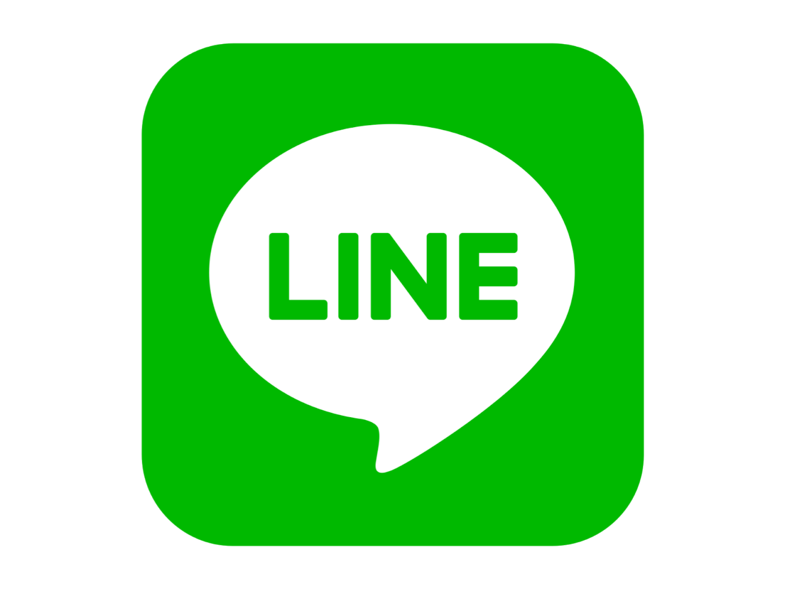
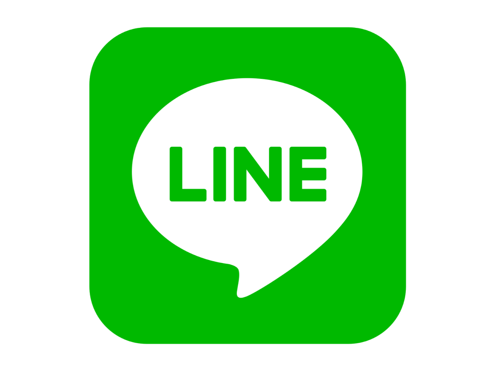

Juara I Lomba Pidato Islami
di SMAN 6 Kota Tangerang Selatan. Meraih juara pada perlombaan tersebut membuat saya cukup tidak menyangka,
karena saya bukanlah seorang siswa yang percaya diri untuk tampil depan umum,
namun saya selalu berlatih untuk memberikan penampilan yang terbaik sebagai
seorang perwakilan kelas. Akhirnya, saya berhasil mendapatkan juara I se-SMA. Hal tersebut membuat saya bangga dengan diri saya sendiri
karena dapat mengharumkan nama kelas dan menyadari
bahwa usaha yang saya lakukan membuahkan hasil. |
Masuk 10 Besar Olimpiade Matematika yang diadakan oleh Universitas Pamulang. Meskipun saya tidak mendapatkan juara dan hanya masuk ke dalam 10 besar,
saya merasa hal tersebut adalah sebuah pencapaian yang luar biasa karena
tim saya berhasil masuk ke dalam 10 besar tim terbaik dari 100 tim peserta dimana hal tersebut bukanlah
sesuatu yang mudah bagi sebagian orang. |
Diterima di Universitas Brawijaya melalui jalur SNMPTN. Peserta SNMPTN prodi Teknik Informatika tahun 2020 mencapai ribuan peserta dengan daya tampung hanya sekitar 70 siswa,
sehingga bisa dibayangkan untuk lolos melalui SNMPTN harus bersaing dengan ribuan siswa lain dengan impian yang sama. Dengan keketatan seperti ini, diterima lebih awal tanpa tes di perguruan tinggi favorit akan
menjadi prestasi dan kebanggaan tersendiri bagi diri sendiri dan keluarga. |
Mendapatkan juara kelas saat SMA. Banyak sekali rintangan yang saya hadapi saat berada di bangku SMA mulai dari segi ekonomi
dan sebagainya. Namun hal tersebut tidak membuat saya menyerah begitu saja untuk
terus berprestasi. Alhamdulillah dengan doa dan usaha saya mendapatkan peringkat 3 besar di tiap semesternya. Hal
tersebut membuat saya bangga terhadap diri saya sendiri karena dapat melewati berbagai rintangan yang ada dan
tidak mudah menyerah terhadap keadaan. |
Juara II Lomba Karate Tingkat Nasional. Saya menjuarai perlombaan tersebut saat berada di bangku 2 SD. Dengan usia yang
semuda itu, saya berhasil meraih juara II pada perlombaan Karate Tingkat Nasional yang diselenggarakan
di Bali, tentu hal ini menjadi kebanggaan tersendiri bagi saya, karena apa yang saya
usahakan tidak sia-sia. |
Penerima Beasiswa Unggulan Kemendikbud Tahun 2021. Menjadi salah satu penerima Beasiswa ini membuat saya sangat bangga terhadap
diri saya sendiri hingga saat ini, dikarenakan diantara 34 ribu pendaftar, saya menjadi salah satu mahasiswa yang berhasil
lolos hingga menjadi Awardee Beasiswa Unggulan Tahun 2021. Dengan
mendapatkan beasiswa ini saya dapat membahagiakan dan meringankan beban kedua orang tua saya. |
 
